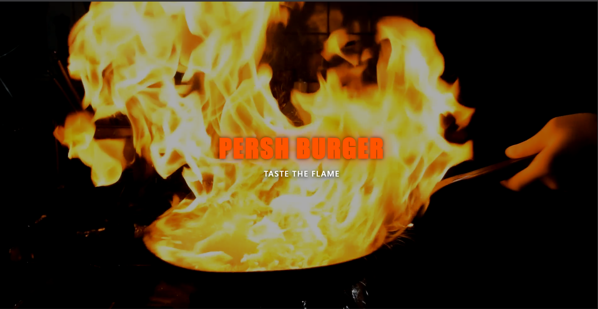
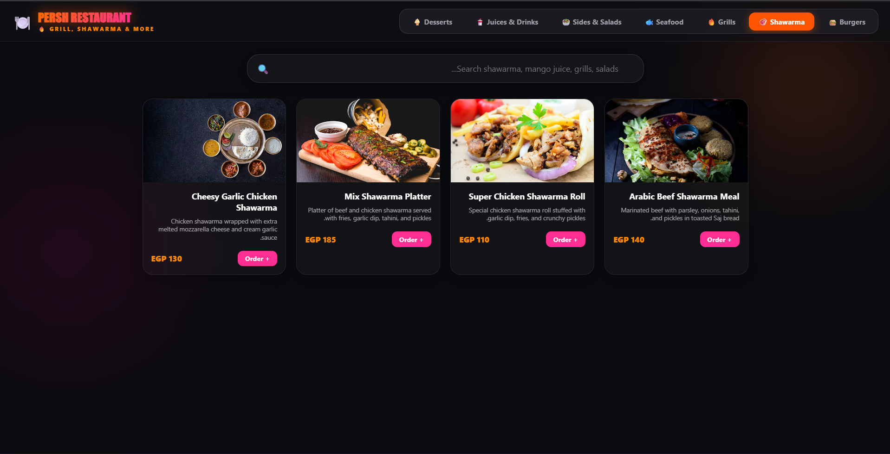
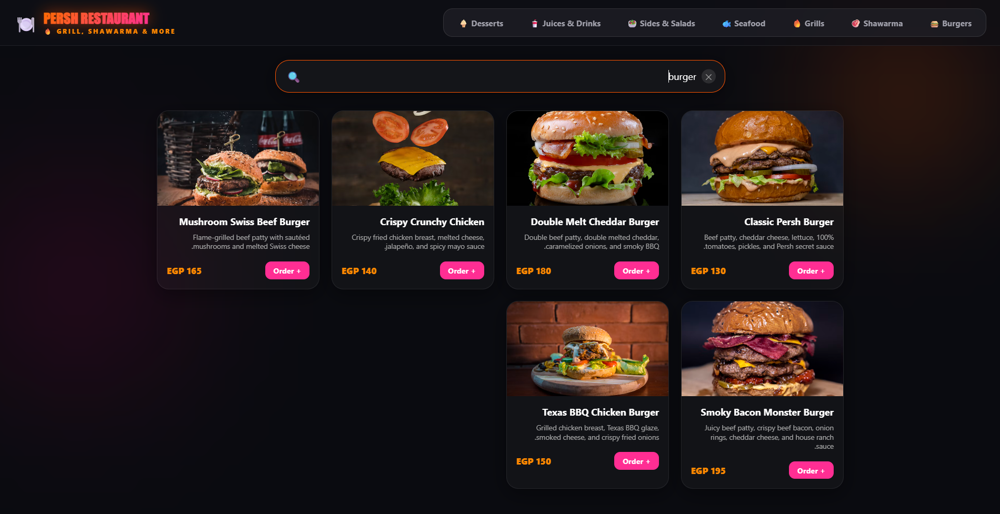
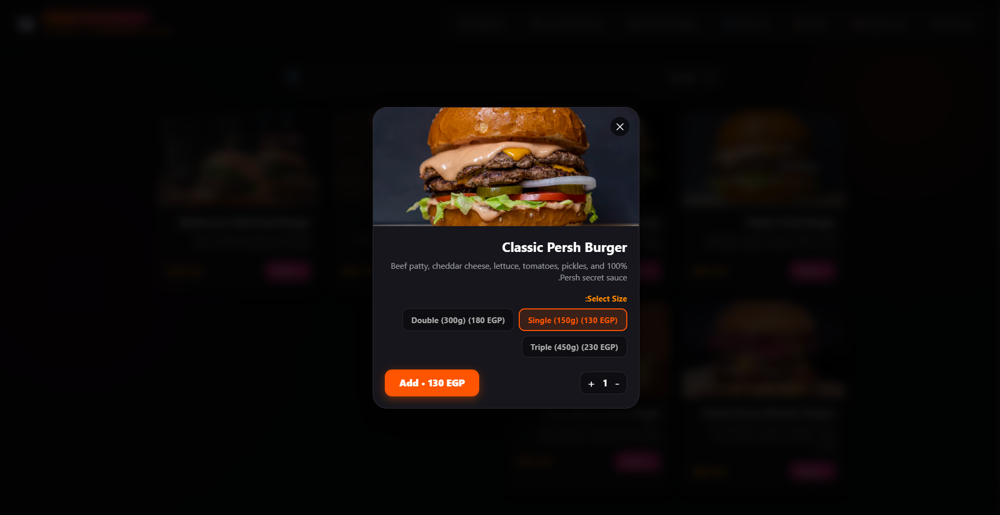
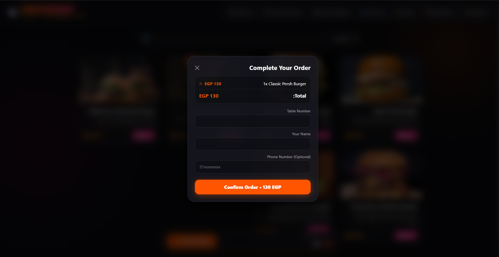
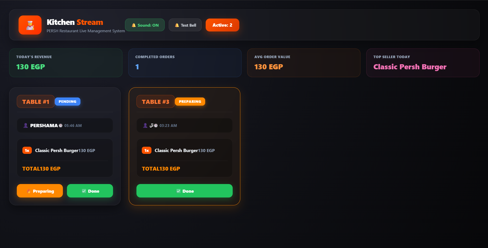
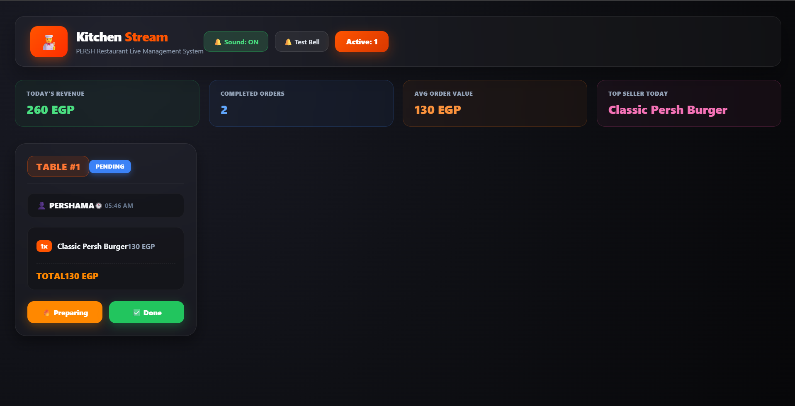

Real-time QR Restaurant & Kitchen System
An end-to-end real-time ordering ecosystem enabling customers to scan table QR codes, browse menus, place orders instantly, and sync data seamlessly with a live Kitchen Dashboard using React and Firebase.

01 Luxurious Menu Intro & Brand Experience
Crafting a striking and upscale entrance for the digital menu. This initial visual introduction sets an immediate tone of fine dining and luxury, greeting customers with high-end aesthetics and a cinematic vibe right after scanning the table's QR code.

02 Direct Product Showcase & Frictionless Menu UX
Immediately following the cinematic intro, the menu transitions directly into displaying products cleanly and instantly. This streamlined approach avoids any unnecessary friction or complexity, allowing customers to browse items, check prices, and place orders effortlessly from the very first glance.

03 Multi-Category Navigation & Organized Menu
To accommodate the restaurant's diverse menu offerings, an intuitive top category navigation bar was engineered. This allows customers to easily filter and switch between various food sections instantly, ensuring a smooth, clutter-free browsing experience.

04 Instant Search Bar & Quick Item Discovery
To enhance user experience and eliminate any browsing friction, an advanced real-time search bar was integrated. This allows customers to instantly search for specific dishes, ingredients, or favorites on the fly, ensuring a fast and frictionless ordering journey.

05 Item Customization & Size Selection Modal
After selecting a meal, an interactive modal pops up allowing customers to customize their order by choosing preferred sizes (e.g., Single, Double, Triple) with dynamically updated pricing for each option. This ensures clear visibility, flexible choices, and a seamless add-to-cart experience.

06 Checkout & Table Verification Flow
At the final checkout step, customers enter their name and table number to ensure accurate order delivery once ready, along with an optional phone number field for communication. This streamlined form wraps up the ordering process swiftly and securely.

07 Order Success Confirmation & Kitchen Dispatch
The final confirmation step in the user journey: once the order is placed, a sleek success banner notifies the customer that their meal has been successfully dispatched straight to the kitchen in real-time, leaving them relaxed and ready for service.

08 Live Kitchen Stream & Order Management (KDS)
The central command hub for kitchen staff: incoming orders stream in real-time displaying table numbers, item details, and preparation statuses (Pending, Preparing, Done). This robust live tracking system eliminates paper tickets and optimizes kitchen workflow efficiency.

09 Live Revenue Tracking & Daily Analytics
Once orders are marked as completed, the dashboard instantly updates daily revenues, total completed orders, average order value, and top-selling items. This provides restaurant owners with real-time financial metrics and operational insights right from the kitchen stream.